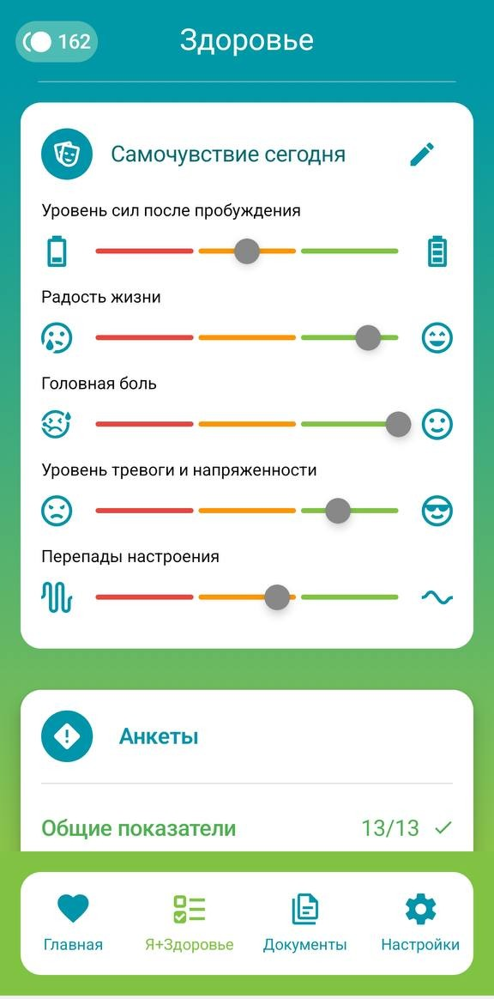
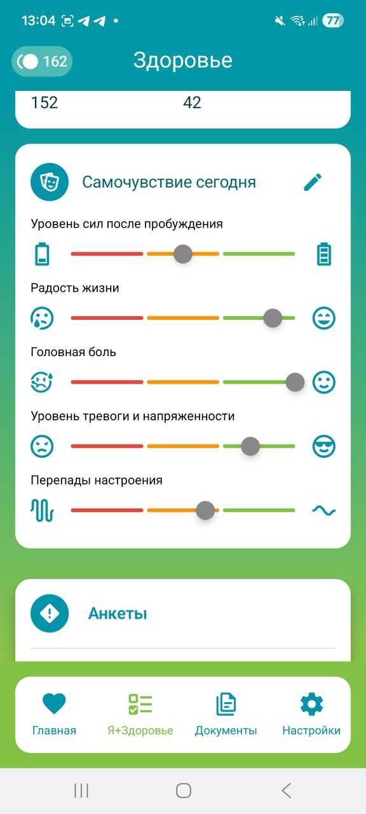
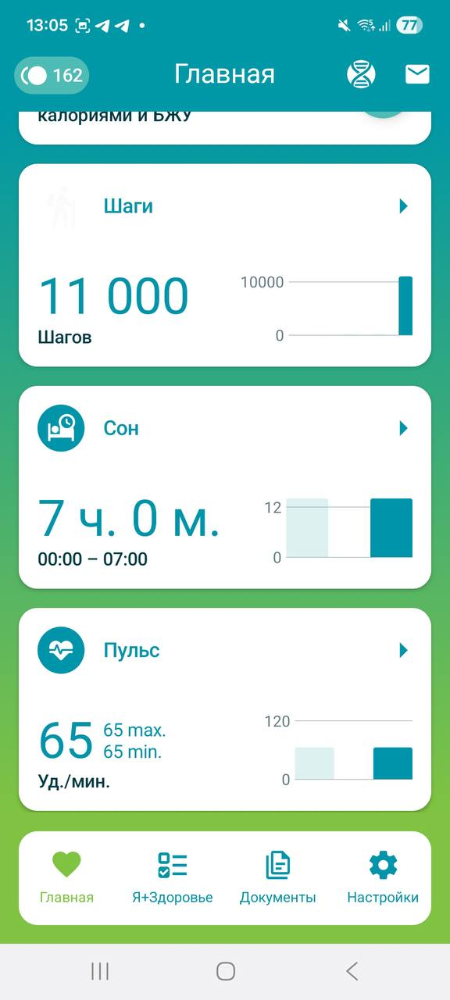
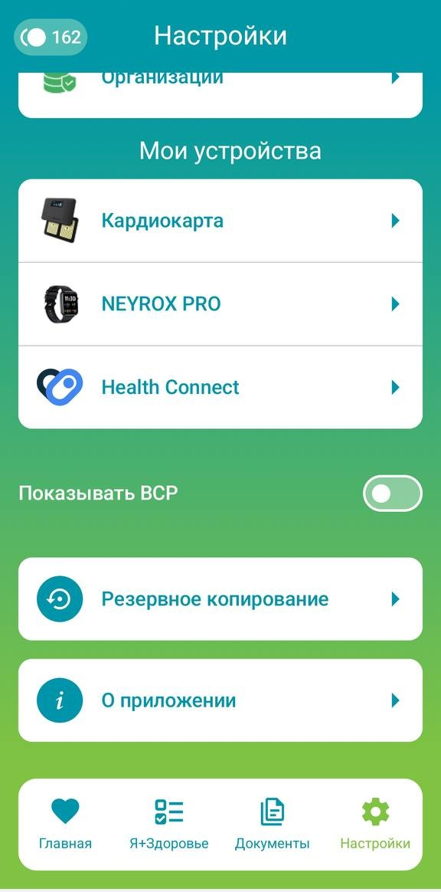
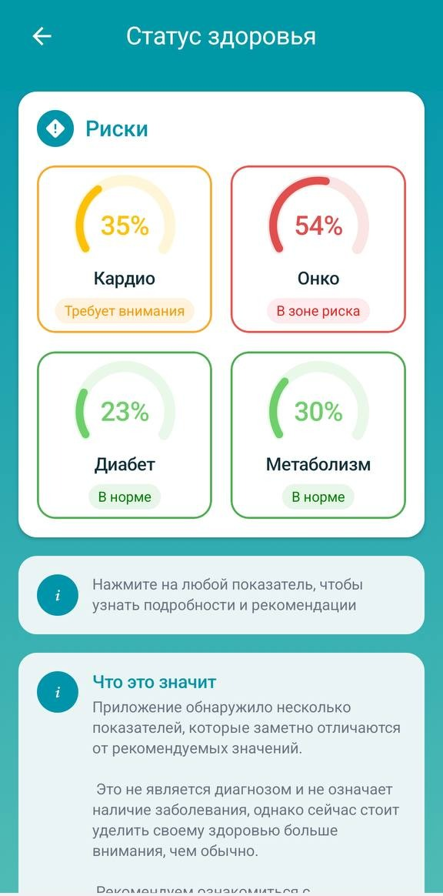
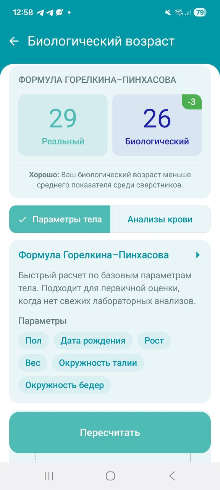

Числа на экранах — пример заполнения, не метрики продукта.
Документы
Самочувствие
Паспорт
Информационная поддержка · не заменяет консультацию врача
КАРТА ВОЗМОЖНОСТЕЙ
Выберите знакомую задачу
Самочувствие, данные с устройств, документы и ориентиры по статусу —
четыре входа в одно приложение.
Главная, Я+Здоровье, Документы и Настройки закрывают разные задачи. На
этой странице — короткие сценарии и ответы на частые вопросы, чтобы
быстрее найти нужное.
ВВОД
Вести вручную
Фиксируйте то, что обычно теряется между заметками и памятью.
Самочувствие, привычки, питание и показатели.
Самочувствие
Привычки
Питание
Анкеты
Показатели

Основной экран: самочувствие и анкеты.

Контекст: самочувствие сегодня.
Числа на экранах — пример заполнения, не метрики продукта.
СВЯЗЬ
Подключить из платформ и устройств
Соберите базовую картину из привычных health-сервисов и устройств.
Health-платформы, устройства, шаги, сон и пульс.
Активность
Сон
Пульс
ВСР
Кардиокарта
NEYROX PRO
Health Connect
Google Fit
Samsung Health
Apple Health

Основной экран: шаги, сон и пульс.

Контекст: устройства и ВСР.
Числа на экранах — пример заполнения, не метрики продукта.
АРХИВ
Хранить историю
Держите важные медицинские материалы рядом с контекстом
самочувствия.
Паспорт, документы и результаты исследований.
Паспорт здоровья
Приёмы
Лабораторные исследования
Генетические исследования
Исследования
Запросы
Добавление через QR
Основной экран: категории документов.Контекст: паспорт здоровья.
Числа на экранах — пример заполнения, не метрики продукта.
ЗАБОТА
Ориентироваться и готовиться к разговору со специалистом
Собирайте вопросы и подсказки как информационную поддержку, не
диагноз.
Статусы, расчётные оценки и вопросы для специалиста.
Статус здоровья
Биологический возраст
Чат-бот «Практический»
Информационные материалы
Экспериментальная аналитика

Основной экран: статус здоровья.

Контекст: биологический возраст.
Числа на экранах — пример заполнения, не метрики продукта.
Подключение данных
Привычные сервисы остаются рядом
Материалы поддержки объяснят назначение интеграций и шаги
подключения совместимого сервиса.
Google Fit
Инструкция готовится
Samsung Health
Инструкция готовится
Apple Health
Инструкция готовится
Следующий шаг
Нужен короткий ответ или подробный маршрут?
FAQ поможет быстро сориентироваться, а документация проведёт по
последовательным шагам. Реальные ссылки будут подключены, когда
материалы будут опубликованы.